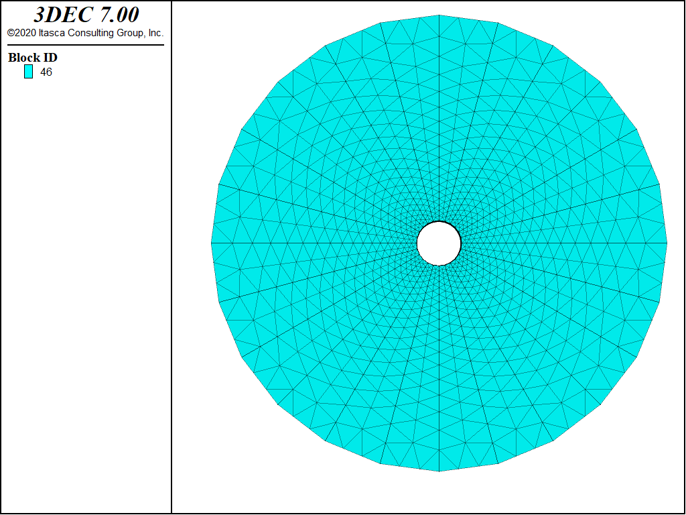
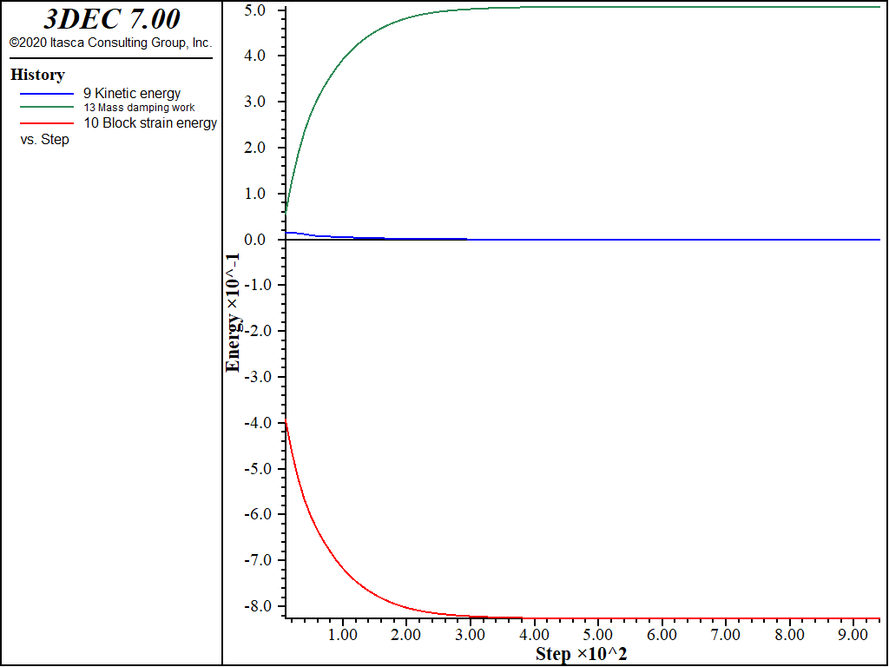

能量计算
引言
3DEC 对完整岩石、节理及边界所做的功进行能量变化计算。此处计算的能量项，采用与 Salamon（1984）相同的一般术语。
由于 3DEC 采用增量求解过程，每个时间步均在物体各质量点处求解运动方程。系统趋向平衡时，每个时间步都确定各能量分量的增量变化。3DEC 还持续累计各分量。
能量平衡
总能量平衡可用释放能量（\(W_r\)）表示，即模型边界做功与储存及耗散应变能总量之间的差：
其中：
\(Wr\) = 释放能量；
\(W\) = 向系统输入的边界加载总功；
\(U_c\) = 材料中储存的总应变能；
\(U_b\) = 系统势能总变化；
\(W_j\) = 节理剪切耗散的总能量；以及
\(W_p\) = 完整岩石塑性变形耗散的总功。
也可根据动能、质量阻尼功、黏性边界做功及开挖材料应变能，以第二种方式计算释放能量：
其中：
\(U_k\) = 系统当前动能；
\(W_k\) = 质量阻尼耗散的总功；
\(W_v\) = 黏性（无反射）边界做功；以及
\(U_m\) = 开挖材料中的总应变能。
第二种释放能量表达形式对动力问题尤其有用，因为释放的动能容易计算。
各项的定义及计算方法见下一节。
各能量分量的计算
边界加载总功（\(W\)）
3DEC 块体结构外边界上的做功，由边界网格点力和位移计算。对于动力问题，在达到初始应力平衡后，可将应力边界替换为无反射黏性边界。网格点做功计算如下：
其中：
\(W_{gi}\) = 外边界网格点 \(i\) 处的做功；
\(F_{xi}\) = 网格点处 \(x\) 方向的力；
\(u_{xi}\) = 网格点处 \(x\) 方向的位移；
\(F_{yi}\) = 网格点处 \(y\) 方向的力；以及
\(u_{yi}\) = 网格点处 \(y\) 方向的位移。
\(F_{zi}\) = 网格点处 \(z\) 方向的力；以及
\(u_{zi}\) = 网格点处 \(z\) 方向的位移。
时间步 \(l\) 内的边界总功 \(W_l\)，为所有边界网格点做功之和：
其中，\(ngp\) = 边界网格点数量。
对全部时间步累计边界功：
其中，\(nt\) = 时间步数量。随着系统趋于平衡，\(W\) 将趋于常数。
边界加载功率 \(\Delta W\)，就是每个时间步的边界做功除以时间步长：
其中，\(\Delta t\) 为时间步长。
模拟期间记录总功 \(W\) 和增量功 \(\Delta W\) 的历史。
势能（\(U_b\)）
重力势能变化根据网格点重力和位移计算。对所有网格点的增量位移求和，得到总势能变化：
其中：
\(U_{gi}\) = 网格点 \(i\) 的势能；
\(m_i\) = 网格点 \(i\) 的质量；
\(u_{xi}\)、\(u_{yi}\)、\(u_{zi}\) = 网格点 \(i\) 的位移分量；以及
\(g_x\)、\(g_y\)、\(g_z\) = \(x\)、\(y\) 和 \(z\) 方向的加速度，通常为重力加速度。
在给定时间步 \(k\)，对所有网格点 \(i\) 的能量求和，得到总势能：
对全部时间步累计 \(U_b\)：
其中，\(nt\) 为时间步数量；随着模型趋于平衡，\(U_b\) 将趋于常数。
动能（\(U_k\)）
每个时间步均计算各网格点动能，并在该时间步对全部网格点求和。不跨时间步累计动能，因此系统趋于平衡时，动能将趋近于零。动能为
其中：
\(U_k\) = 给定时间步内所有网格点的动能；
\(m_i\) = 网格点 \(i\) 的质量；以及
\(\dot u_i\) = 网格点 \(i\) 的速度。
计算增量动能，使用户能够检查相邻时间步之间的变化率：
其中：
\(U_{kn}\) = 时间步 \(n\) 的动能；
\(U_{kn−1}\) = 时间步 \(n-1\) 的动能；以及
\(\Delta t\) = 时间步长。
对于刚性块体，也以类似方式根据块体质量和速度计算动能。
阻尼耗散能（\(W_k\)）
质量阻尼功是局部阻尼或全局阻尼吸收的全部能量之和，主要用于静力分析。动力分析中，黏性边界做功将远大于阻尼耗散能，并主要控制计算所得总释放能量。
通过研究简化的运动方程，最容易理解阻尼耗散能：
其中：
\(\dot u\) = 质量为 \(m\) 的网格点速度
\(\sum F\) = 网格点处的合力；以及
\(\alpha\) = 阻尼系数，= \(2 \pi f \gamma\)，其中 \(\gamma\) = 临界阻尼比，\(f\) = 系统固有频率（每秒周期数）；以弧度每秒表示的圆频率为 \(\omega = 2 \pi f\)。
阻尼力为
网格点处阻尼耗散能变化率为
网格点 \(j\) 在一个时间步内的阻尼耗散能为
其中，\(W_{dj}\) 为网格点 \(j\) 处的阻尼耗散能，\(U_k\) 为该网格点动能。
因此，阻尼耗散能与动能分量通过阻尼系数关联。总质量阻尼功为所有网格点及所有时间步的总和：
其中：
\(W_d\) = 阻尼耗散总能量；
\(nt\) = 时间步数量；以及
\(ngp\) = 网格点数量。
增量阻尼耗散能也计算为
岩体中储存的应变能（\(U_c\)）
岩体中储存的总应变能由两部分组成：块体储能和节理储能。分别计算两部分，再求和确定总储能 \(U_c\)。
块体储存的应变能（\(U_{cb}\)）
每个时间步均计算块体内所有有限差分网格单元的应变能。对全部块体求和得到总储存应变能。每个网格单元在一个时间步内的增量应变能为
其中：
\(\sigma_{ij}\) = 当前网格单元应力；
\(\sigma_{ij}^\prime\) = 上一时间步的网格单元应力；
\(e_{ij}\) = 当前时间步内的增量应变；以及
\(V\) = 网格单元体积。
块体应变能为其内部全部网格单元之和，
给定时间步的总应变能为所有块体之和。程序对全部时间步持续累计，因此随着系统趋于平衡，\(U_{c_b}\) 将随时间趋于常数。
增量块体应变能也按以下方式计算：
在任何开挖之前建立模型初始平衡时，采用不同于上述方法的计算。通常使用 区块初始应力命令（block insitu stress） 命令“固定”各网格单元应力，以设置模型原位应力。同时施加与内部应力平衡的边界应力，模型就处于初始应力平衡，无须时间步进。但这种在初始应力下固结物体的方法，不会在物体中产生应变，因此也没有表观应变能。所以，采用另一种形式的应变能密度方程，定义系统初始应变能：
节理应变能（\(U_{cj}\)）
节理储存的应变能分为四个分量：剪切弹性应变能（\(U_{js}\)）、压缩弹性应变能（\(U_{jc}\)）、拉伸弹性应变能（\(U_{jt}\)）及滑移耗散能（\(U_{jf}\)）。两种内置节理本构模型，即库仑滑移模型和连续屈服模型，对这些分量采用不同计算方式。库仑模型的节理法向和剪切刚度为线性，而连续屈服模型允许非线性刚度。程序计算模型全部节理上各接触的能量，但目前不能按节理分别统计能量。
库仑滑移模型——线性刚度
若 \(f_n < 0\)，
若 \(f_n \ge 0\)，
若 \(f_s < f_{s \max}\)，
若 \(f_s \ge f_{s \max}\)，
其中：
\(f_n\)、\(f_s\) = 接触处当前法向力与剪切力，压缩为正；
\(f_n^{\prime}\)、\(f_s^{\prime}\) = 接触处上一时间步的法向力与剪切力；
\(u_n\)、\(u_s\) = 接触处当前时间步内的增量法向位移与剪切位移；以及
\(f_{s \max}\) = 满足库仑滑移条件（\(f_{s \max} < f_n \tan \phi + C\)）时的剪应力。
当 \(f_s \leq f_{s \max}\) 且发生滑移时，库仑模型通过摩擦耗散能量，见下文。
连续屈服模型——允许非线性刚度
其中：
\(f_n\)、\(f_s\) = 接触处法向力与剪切力；
\(f_n^{\prime}\)、\(f_s^{\prime}\) = 上一时间步的接触应力；
\(u_n\)、\(u_s\) = 当前时间步内的增量法向位移与剪切位移；以及
\(F\) = 连续屈服模型的屈服因子，详见3DEC 中的连续屈服节理模型（Continuously Yielding Joint Model In 3DEC）。
节理吸收和耗散的总能量 \(U_{cj}\) 为全部分量之和：
开挖材料所含应变能（\(U_m\)）
岩石开挖时，开挖体积中储存的应变能会释放。3DEC 可通过 delete 命令，或通过 block excavate 赋予空本构模型，开挖构成洞室的岩石块体。空模型不会删除块体，但会阻止空块体中的力传递到相邻块体的网格点。空网格单元可随洞室变形而坍塌，后续也可改为回填材料。块体被删除或赋予空本构模型时，能量累计值会更新。
开挖材料中的总应变能包含块体和节理应变能。块体应变能采用与前述相同的方法计算。利用主应力可计算为：
其中：
\(U_{mb}\) = 块体应变能；
\(V\) = 网格单元体积；
\(E\) = 岩体杨氏模量；
\(\nu\) = 泊松比；
\(\sigma_{11}\)、\(\sigma_{22}\)、\(\sigma_{33}\) = 网格单元质心处的主应力；
\(nb\) = 开挖材料中的块体数；以及
\(nz\) = 块体内的网格单元数。
围绕开挖块体的节理总应变能（\(U_{cj}\)）如下。
库仑节理（恒定刚度）
其中：
\(U_{cj}\) = 节理中储存的应变能；
\(f_n\)、\(f_s\) = 节理法向力与剪切力；
\(k_n\)、\(k_s\) = 节理法向刚度与剪切刚度；以及
\(nc\) = 接触数量。
连续屈服节理（非线性法向刚度）
其中：
\(e_n\) = 法向刚度指数；
\(u_n\) = 节理面的法向位移（闭合量）；
\(a_n\) = 节理初始法向刚度；
\(f_s\) = 接触处剪切力；
\(k_s\) = 接触剪切刚度；以及
\(nc\) = 接触数量。
块体开挖时，其能量从总应变能 \(U_c\) 中移除，并加入开挖材料总能量 \(U_{mb}\)。岩体的初始或原位应变能状态，通过标准应变能密度函数确定，其中主应力等于原位应力。对于初始平衡、采矿前的条件，将该能量加到边界加载功 W 中。最终储存应变能计算为：
其中，“\(^\prime\)”表示前面开挖步骤的值。
节理摩擦功（\(W_j\)）
节理摩擦发热会耗散能量。该功由弹性应变能转化而来，不可恢复。3DEC 将摩擦能量与弹性储存节理能量项（\(U_{jt}\)、\(U_{jc}\) 和 \(U_{js}\)）分别跟踪。线性和非线性法向刚度下的摩擦损失，计算如下。
库仑节理——线性法向刚度
若 \(f_s \ge f_{s \max}\)，
其中：
\(U_{jf}\) = 接触处一个时间步内的摩擦能；
\(f_s\) = 接触处当前剪切力；
\(f_s^{\prime}\) = 接触处上一时间步的剪切力；
\(u_s\) = 剪切位移增量；以及
\(nc\) = 接触数量。
连续屈服节理（非线性法向刚度）
其中，\(F\) = 连续屈服节理的屈服因子，\(nc\) = 接触数量。
对某开挖步骤内的所有时间步求和，累计总耗散能：
其中，\(W_j\) = 总摩擦耗散能，\(nt\) = 时间步数量。
黏性边界功（\(W_v\)）
黏性边界用于抑制入射应力波的反射。由边界网格点处的边界力和变形，计算这些应力波耗散的能量：
其中：
\(W_{gj}\) = 网格点 \(j\) 处的边界功；
\(f_x\)、\(f_y\)、\(f_z\) = 边界力；以及
\(u_x\)、\(u_y\)、\(u_z\) = 边界位移。
一个时间步内的黏性耗散能为
其中，\(nbp\) = 边界网格点数量。
对全部时间步累计总黏性功。增量黏性边界功计算为
其中，\(\Delta t\) = 时间步长。
块体通过塑性功耗散的能量（\(W_p\)）
3DEC 提供多种塑性模型，描述块体变形性。网格单元发生不可逆变形时，通过塑性功耗散能量。任意网格单元应变均可分为弹性和塑性两部分。先确定弹性应变，再按前述方法确定弹性应变能。总应变能减去弹性能量分量，即得到塑性功。
弹性应变能为
开挖步骤之间弹性应变能的变化为
其中，\(W_e\) 为当前弹性应变能，\(W_e^{\prime}\) 为此前弹性应变能。
可根据总应变和应力确定总能量变化：
某开挖步骤耗散的总塑性功，为任意时间步内总能量变化与弹性能量变化之差：
总耗散量就是每个时间步全部块体 \(\Delta W_p\) 的总和。
回填压缩中耗散的能量
3DEC 会跟踪采用空模型方法开挖、随后被回填替代的块体。此时，回填材料可储存弹性应变能，也可通过塑性变形耗散能量。砂质充填通常如此。按前述方法，分别计算每个网格单元储存或耗散的能量，并加入塑性功项。
开挖材料体积（\(V_m\)）
块体删除或赋予空本构模型类型时，其体积加到 \(V_m\)。利用组成该块体网格单元的质量和密度计算体积：
\(V_z\) = 质量／密度
其中，\(V_z\) = 单个网格单元体积。
于是，已删除块体体积等于
对开挖块体内全部网格单元求和。
3DEC 中的操作方法
使用 model config energy 命令启动 3DEC 能量计算。从此时起，根据每个时间步的应力、力、位移和应变变化，以增量方式计算前述各能量。除动能 Uk 作为增量值保留之外，其余能量值均从此时起累计。因此，输出的能量大小为自开始时间步进以来该问题的累计值，包含全部开挖步骤所计算的能量。
可使用 模型能量历史命令（model history energy） 命令监测能量。任何时候均可通过 列出应变能汇总命令（block list energy） 命令，将能量值输出到屏幕。
下一节给出一个示例。
示例：圆孔开挖
该模型显示快速开挖圆形隧道后各能量分量的演化。开挖半径为 1 m，3DEC 模型外半径为 10 m。开挖前存在 100 MPa 的静水压缩应力。弹性材料剪切模量为 29.17 GPa，泊松比为 0.2。
图 1（Figure 1） 显示已划分网格的 3DEC 块体几何。用于模拟开挖并监测能量分量的 3DEC 数据文件列于 energy.dat。


图 1：3DEC 模型几何
energy.dat
model new
model random 10000
model config energy
model large-strain off
block create drum center-1 0 0 0 center-2 0 1 0 radius-1 10 radius-2 10 edges 24
; 创建用于定义隧道坐标的数据表
; 输入表名、半径和边数
fish def make_table(table_name, radius, num_edges)
tab = table.create(table_name)
loop i (1,num_edges)
local theta = 2.0*math.pi*(i-1)/num_edges
table.x(tab,i) = radius*math.cos(theta)
table.y(tab,i) = radius*math.sin(theta)
end_loop
end
[make_table('tunnel',1,24)]
block cut tunnel radial table-1 'tunnel' table-2 'tunnel' axis 0,0,0 0,1,0 group 'tunnel'
block zone size center 0 0 0 edge-1 0.2 dist-1 2 edge-2 1.5 dist-2 10
block zone gen-new min-edge 0.2 max-edge 1.5
;设置应力
block insitu stress -100 -40 -100 0 0 0
; 固定边界
block gridpoint apply vel 0 0 0 range cyl end-1 0 0 0 end-2 0 1 0 rad 9.5 10.5
block gridpoint apply vel-y 0 range pos-y 0
block gridpoint apply vel-y 0 range pos-y 1
;材料参数（MPa），泊松比 = 0.2
block zone cmodel assign elastic
block zone prop density .002 bulk 38.9e3 shear 29.17e3
block history disp-x pos 1 0.5 0
block history disp-x pos 2 0.5 0
block history stress-xx pos 1 0.5 0
block history stress-xx pos 2 0.5 0
block history stress-xx pos 3 0.5 0
block history stress-zz pos 1 0.5 0
block history stress-zz pos 2 0.5 0
block history stress-z pos 3 0.5 0
model solve convergence 1
model save 'initial'
============================================
; 开挖
model his energy block-kinetic
model his energy block-strain
model his energy block-strain-excavated
model his energy block-volume-excavated
model his energy damp-mass
model his energy boundary-load
model his energy total-released
block delete range group 'tunnel'
model solve convergence 1
program log-file 'energies.log'
program log on
block list energy
program log off
model save 'exc'
图 2（Figure 2） 显示应变能、动能和阻尼耗散能历史。图中动能不随时间累计，而是在模型达到平衡时衰减至零。同时，累计的阻尼耗散能趋于常数。应变能也趋于一个负常数，表示隧道开挖后岩石向内运动并释放应变能。


图 2：阻尼耗散能、应变能及增量动能历史。
下表显示 列出应变能汇总命令（block list energy） 命令的结果。
* Logging ended at Thu Oct 8 01:29:49 2020
**********************************************
**********************************************
* Logging started at Thu Oct 8 06:23:52 2020
* By 3dec Version 7.00 Release 126
*
*
* Job Title:
**********************************************
Totals for energy stored and dissipated in system.
--------------------------------------------------
Current kinetic energy (Uk) = 1.647216e-08
Total block strain energy (Ucb) = -8.267981e-01
Total fill strain energy (Ucf) = 0.000000e+00
Total joint strain energy (Ucj) = 0.000000e+00
Total strain energy (Uc=Ucb+Ucf+Ucj) = -8.267981e-01
Total block energy excavated (Umb) = 3.193760e-01
Total joint energy excavated (Umj) = 0.000000e+00
Total strain energy excavated (Um=Umb+Umj) = 3.193760e-01
Total block volume excavated (Vm) = 3.105829e+00
Total change in potential energy (Ub) = 0.000000e+00
Total mass damping work (Wk) = 5.074388e-01
Total viscous boundary work (Wv) = 0.000000e+00
Total friction work (Wj) = 0.000000e+00
Total plastic strain work (Wp) = 0.000000e+00
参考文献
Salamon, M. D. G.《岩石力学中的能量考量：基本结果》，J. S. Afr. Inst. Min. Metall.，84(8)，233-246（1984）。
| 这些内容对您有帮助吗？… | FLAC3D © 2019, Itasca | 原文更新于 2020 年 10 月 8 日 |
| 版权与免责声明 | ||